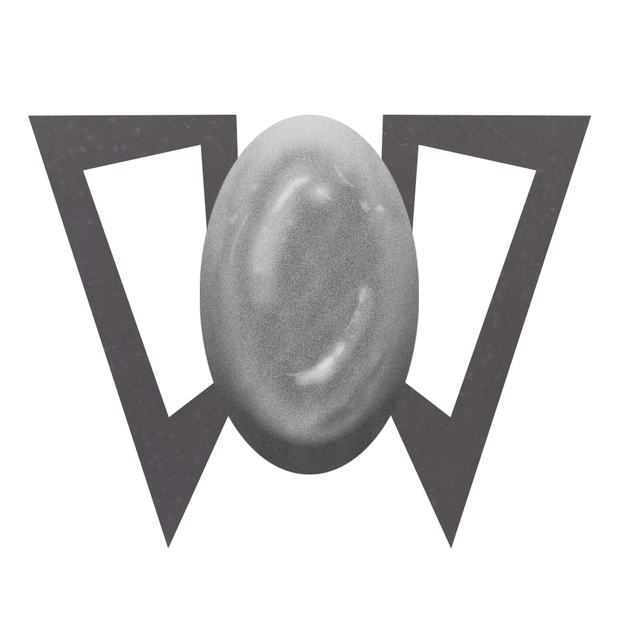

Poetry Corner
The heart is cage without a key.
Filled with rage, beating free.
Against the ribs it can not see.
A skeleton without doors or locks.
In a sea of cells - The mind, the docks.
When the wind howls
There is a tunnel in the air.
A funnel, passage nowhere.
Through Open Jowls.
Noise erupts from curbed smiles
When the wind howls for miles.
A special order from within.
By the nerves underneath your skin.
The future hungers for bitten nails
A fitting recipe which entails
A helping of respite
Compelling you to bite
A moment in-between your breath
When lungs enjoy an empty bath
The mind wanders a narrow path
To a subtle pace of life and death
Every day you drift into the sea.
Walking a path without a name.
The roads will never be the same.
Save from slumber...your dreams return thee.
You live in static lands
Covered by the clouds of a memory
Which rains upon your precious dome
Passing through trickling sands
to place where you're meant to be:
The dewdrops of home.
Liquidation of trust
Is an act so vile.
Dumping precious pearls.
Painting roses with bile.
The smell makes your stomach flip
Every time you take a sip.
Drink we all must
From the wells of trust.
Smoke in a mirror
Spoke before your eyes
The image is not clearer
The visage is unwise.
Look into the void
Where stars and comets collide.
There's no need to be paranoid
About what's inside.
Without a heart
You're a bucket of tin
In every part,
The Ghost within.
A modest sunrise
tugs on my heartstrings.
A melody rings
to open my eyes.
The world rumbles
And falls down.
a building crumbles
Upon my fragile crown.
Reeling from the river's wake
The edges of my form break
Revealing liquid chrome
Shining in the sun
The day has just begun
With a strong feeling of home.
A dandelion in the sky
Floats high
Eye sharper than a telescope
Spots my invitation so dope
A black rose swoops upon the trellis
To dwell where the food is
Like glass on the shadows from a shimmering lake
Like a slow heartbeat in the bodies of dreamers
Arms of the sun extend toward the plants
To share brilliant grace
with outer space
Pull upon the coils
Of a well taught mind
For a wealth of knowledge to tap.
Tension you will find
Towards a natural state of recoil.
Snap.
Inside your skull
Is a lullabye
to let memories go.
So all you know
Could be a secret
You would forget.
The setting sun is chasing you.
Your shadow runs but sticks like glue.
Darkness captures everyone.
Worldwide rapture by the setting sun.
Footsteps in the attic
Shuffling in the walls
Scampering down empty halls
The rats are frantic
Chew dramatic
Never there when duty calls
Quenched thirst
On the Horizon
Of the imagination
a fate cursed
Camoflauged
Your first mirage
It's the end of all you know
Before your eyes you'll see a glow
A shining light before thee
The throes of death
One last rhyme.
Just save your breath
One more time.
Ghosts in the machine
Are exercised with ratchets
When you fix a car
Our body is a device to hold the energy of our soul
With all the bells and whistles for vice.
The matter we stole, the burden we bear.
Electricity everywhere.
Status: unknown.
Course shown:
Marked for removal.
All alone...
One condition for approval:
Repay thoughts on loan,
Sourced from your phone.
Cruelty is real.
Footstep on daisy.
Spinning Wheel.
Money like crazy.
The world is slow
Around a moment of success
For a heart of woe;
The Steel Empress.
What is a vessel?
A container of you.
A typical fool
without a clue
Until your soul is full
From the tears you brew.
A paper plane upon a gust of air
Gracefully descends from there
The sky from which your spirit wished
To fly again, your work unfinished.
A shadow wraps a broken heart
Around the edge to pull apart
A wound which never fully healed.
Within, the darkness is revealed.
The sight of hunger knows you best.
Without thinking, you eat...
and the soul is composed once again.
Mix a spirit
With some spice.
Duel a slice of fruit and spear it.
Serve a soul on ice.
Cool.
The scent of pines
and unpaved roads,
Slivers in your eye.
Croaking toads
And hallowed signs
Send shivers down your spine.
Intoxication, incomplete
Infoxication, obsolete.
Believe me, in theory
All the things you'll ever be.
Around them, your memories.
Within them the spirit breeze.
Fickle poets search for
A space where characters wait in store.
The typewriter of yore, commonplace from before.
Flexible survivor from a C: war.
With a clean slate, hot silver tray,
Make sure settings say,
"Cease evermore the writing phase."
"Save the battery, always."
Letters engraved lay bare
On a pillar of limestone...
Before a thousand-yard stare,
Put to a windy grindstone.
Another day saved by commonsense.
Sitting on a fence
Putting indifference.